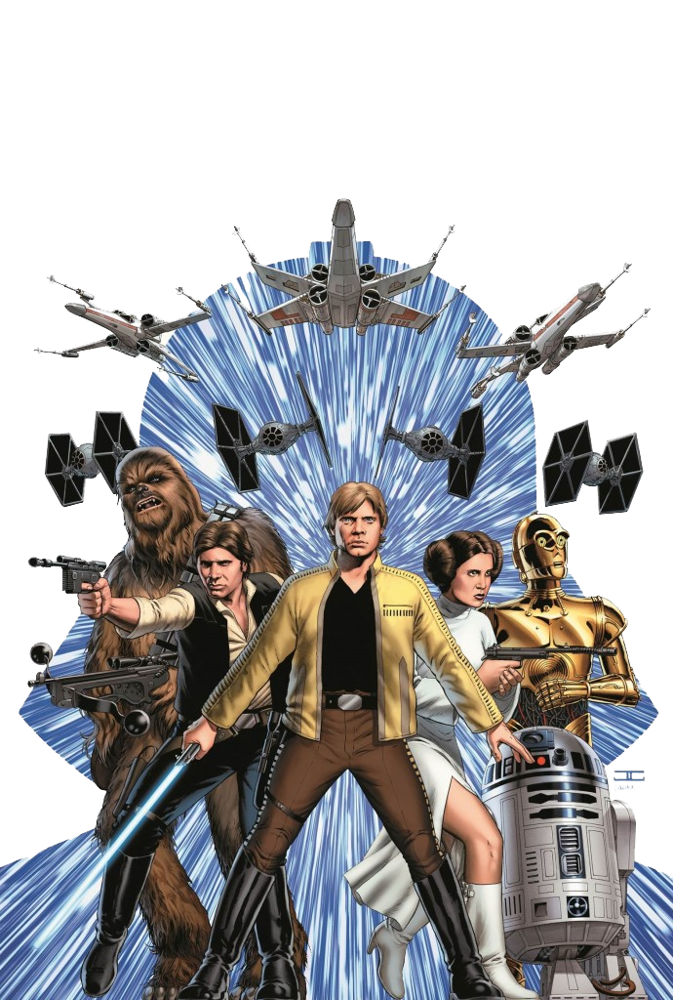

Star Wars: A Galactic Odyssey Shaping Pop Culture and Beyond
Marc Urbealis ~ November 22nd, 2022.

In the expansive realm of entertainment, Star Wars stands as a titanic force that has not only shaped generations but has left an indelible mark on the very landscape of pop culture. This cultural juggernaut, born in 1977, has not just endured for over four decades but has evolved into a timeless saga, influencing marketing strategies, charting the course for future movies, and creating an unparalleled fan base that transcends mere fandom. Star Wars revolutionized the marketing landscape, demonstrating that a film could be more than a cinematic experience; it could be a cultural event. From action figures to lunch boxes, Star Wars pioneered the concept of movie tie-in merchandise, setting the stage for modern film marketing. The saga's ability to transform itself into a brand with a diverse range of products, from clothing to video games, showcased a marketing acumen that other franchises sought to emulate. The success of Star Wars as a marketing powerhouse is not merely confined to its initial releases. The franchise's enduring appeal has allowed it to navigate the evolving landscape of entertainment marketing, adapting to new mediums, such as streaming services and virtual reality experiences. Star Wars is not just a movie franchise; it's a marketable universe that continues to captivate audiences across the globe, sustaining its relevance and commercial viability for over four decades.
The Cinematic Legacy: Charting the Future of Movies
Star Wars didn't just create blockbuster movies; it redefined the very concept of cinematic storytelling. The groundbreaking special effects, immersive world-building, and captivating narratives served as a cinematic template that shaped the industry's future. The success of Star Wars became a catalyst for the development of franchises and cinematic universes, influencing storytelling approaches and inspiring filmmakers to think beyond the confines of a single film. As the saga evolves with new trilogies, spin-offs, and stand-alone films, it continues to set benchmarks for the industry. Star Wars remains a cinematic powerhouse, dictating not only how stories are told but also how they are experienced. The franchise's impact on the film industry transcends mere box office numbers; it is a narrative force that continues to influence the very fabric of storytelling in movies.
Captivating Characters: The Foundation of Fandom
At the heart of Star Wars' enduring success lies its ability to create characters that resonate on a deep, emotional level. From the charismatic Han Solo to the iconic Darth Vader, the saga has given rise to characters that transcend their fictional existence, becoming cultural icons. The captivating characters of Star Wars have not only fueled the saga's success on screen but have also laid the foundation for an unparalleled fan base. Star Wars fandom isn't just about watching movies; it's about connecting with characters whose struggles, triumphs, and complexities mirror the human experience. The emotional investment in characters like Luke Skywalker, Princess Leia, and Rey has created a global community of superfans who extend their passion beyond the screen. This intense connection has transformed Star Wars into more than a franchise; it's a cultural movement, a shared experience that unites fans across generations.
Future Trajectory: From a Galaxy Far, Far Away to Tomorrow
As Star Wars continues to expand its universe with new movies, TV series, and multimedia projects, its influence on the entertainment industry remains unmatched. The franchise's ability to reinvent itself while staying true to its core mythology positions it as a guiding star for the future of storytelling. Star Wars doesn't merely reflect the past; it charts the course for the future, setting the bar for what audiences expect from cinematic experiences. The saga's impact isn't confined to its narrative; it's a cultural force that shapes discussions, influences creative endeavors, and sparks the imagination of storytellers across various mediums. Star Wars is not just a relic of the past; it's a force that continues to shape the future, ensuring that the galaxy far, far away remains a beacon for generations yet to come.
Conclusion: Star Wars Beyond the Screen
In the grand tapestry of pop culture, Star Wars isn't just a cinematic franchise; it's a cultural epicenter that has left an indelible mark on marketing strategies, cinematic storytelling, and the very essence of fandom. As the saga continues to evolve, its impact on the entertainment industry remains profound, shaping the trajectory of movies, influencing storytelling conventions, and fostering a global community of fans united by their love for a galaxy far, far away. Star Wars isn't just a phenomenon of the past; it's a force that continues to shape the future, ensuring that its influence will resonate for generations to come.